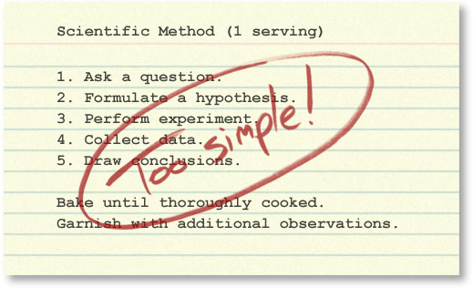

The Scientific Method is traditionally presented in the first chapter of science textbooks as a simple recipe for performing scientific investigations. Though many useful points are embodied in this method, it can easily be misinterpreted as linear and "cookbook": pull a problem off the shelf, throw in an observation, mix in a few questions, sprinkle on a hypothesis, put the whole mixture into a 350° experiment - and voila, 50 minutes later you'll be pulling a conclusion out of the oven! That might work if science were like Hamburger Helper©, but science is complex and cannot be reduced to a single, prepackaged recipe.
The linear, stepwise representation of the process of science is simplified, but it does get at least one thing right. It captures the core logic of science: testing ideas with evidence. However, this version of the scientific method is so simplified and rigid that it fails to accurately portray how real science works. It more accurately describes how science is summarized after the fact - in textbooks and journal articles - than how science is actually done.
The simplified, linear scientific method implies that scientific studies follow an unvarying, linear recipe.
But in reality, in their work, scientists engage in many different activities in many different sequences. Scientific investigations often involve repeating the same steps many times to account for new information and ideas.
The simplified, linear scientific method implies that science is done by individual scientists working through these steps in isolation.
But in reality, science depends on interactions within the scientific community. Different parts of the process of science may be carried out by different people at different times.
The simplified, linear scientific method implies that science has little room for creativity.
But in reality, the process of science is exciting, dynamic, and unpredictable. Science relies on creative people thinking outside the box!
The simplified, linear scientific method implies that science concludes.
But in reality, scientific conclusions are always revisable if warranted by the evidence. Scientific investigations are often ongoing, raising new questions even as old ones are answered.
Here, we'll examine a more accurate representation of the process of science. You can investigate:
- The real process of science
- Testing scientific ideas
- Analysis within the scientific community
- Benefits of science
- Science at multiple levels